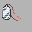

This guide covers all custom mechanics, rule changes, and new features introduced in this romhack. If something feels different from a standard HeartGold playthrough, you will find the explanation here. This page is updated as new mechanics are added.
Effort Values have been removed from the game entirely. Pokemon do not gain EVs from battles and no EV-boosting items have any effect. All stat calculations are based purely on base stats, IVs, nature, and level — keeping the playing field even between the player and trainers.
Each gym leader imposes a level cap on the player's team. Pokemon that exceed the cap before the badge is earned will disobey orders in battle. The cap is lifted the moment the badge is obtained. Caps are listed on each area sheet and in the Progression Guide.

Silver Coins are part of an informal tradition among dedicated trainers in Johto. They are not rewards for victory — they are markers of personal resolve. Each coin represents a personal goal, a self-imposed challenge, or a turning point in a trainer's journey.
A coin changes hands under two conditions: when a trainer is overcome by someone whose resolve surpasses theirs, or when a trainer achieves the goal they were chasing. In both cases, the coin moves forward because a chapter has ended. The coin does not belong to the strongest trainer — it belongs to the one currently closest to their purpose.
Gym leaders and rival battles scale in difficulty as the game progresses. Early fights are straightforward, but later trainers will have more optimised teams, held items, and stronger movesets — rewarding players who engage with the game's mechanics rather than relying on overlevelling alone.
Legendary and Mythical encounters are distributed across three encounter formats so each one has a clear role in progression and routing.
Roamer unlock: Roamers are enabled after defeating all 8 Johto Gyms.
Dedicated quest chains: some groups are handled as full sidequest arcs instead of roaming encounters.
A four-step Lavender sidequest themed around mourning rituals, silence, and respect for the life/death cycle before a static Yveltal encounter.
Contest reward options: Mourner's Ribbon (cosmetic), Silencer Charm (temporary lower wild encounter rate at night), or Dusty Bell (flavor key item).
A long-form arc where the player carries a Cosmog Egg, clears four Guardian setpieces with Tapu allies, then unlocks full Ultra Beast capture content.
A Johto-centered crisis arc where old tower traditions and modern infrastructure both react to the same growing anomaly.
Planned lineage links for Paradox encounters/evolutions. Intended to pair with quest or relic-item unlock gates.
A mask-gated cave quest that culminates in a multi-phase Ogerpon boss sequence before the catch resolution.
Apricorns will be craftable into consumable Lures. A Lure does not force one species; it reweights encounter odds toward a chosen lure group. This keeps routing deterministic without making rare targets guaranteed.
Rules lock: one active lure at a time, duration is encounter-based (not step-based), and it works on walking, surfing, and fishing tables. Fishing still respects Old/Good/Super Rod pools before lure weighting is applied.
Breeding and reward eggs will be split into 10 color pools based on the Pokedex body color field. Each egg source can point to one color table instead of a mixed species table.
All starter Pokemon from every generation can be found in the wild at various points throughout the game. Check the area sheets for locations and encounter rates. Starters are typically found at rare or ultra rare encounter rates.
Item economy is tuned around planning, not one-time losses. Berries, TMs, and HMs are all reusable, so key tools stay available for future battles and routes instead of being burned after one use.
Held items are treated as reusable equipment as well. If an item is consumed or triggered in battle, it returns to your inventory after the fight so your core sets remain intact.
A special puzzle room is available in the Pokemon Center. Each puzzle gives you a pre-set team and a scenario to solve — designed to teach battle mechanics through hands-on challenges. Completing a puzzle for the first time awards coins redeemable at the special shop. Puzzles can be replayed freely after clearing them.